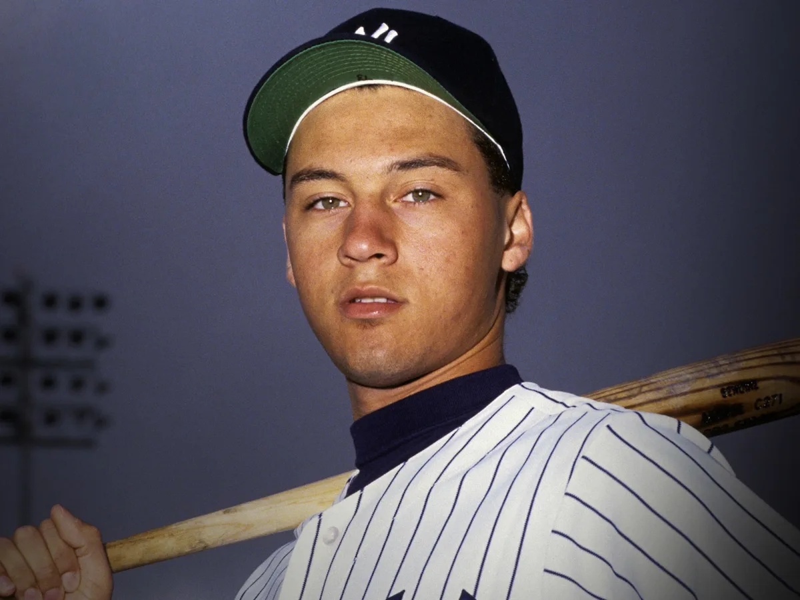
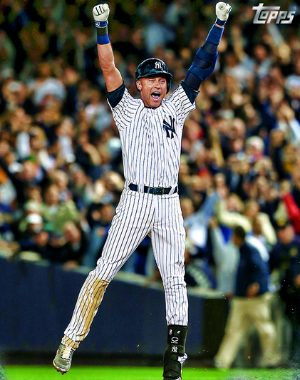
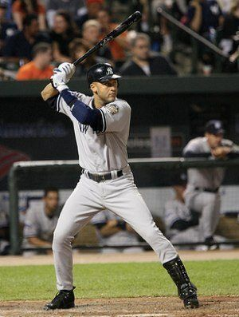

Early Life and Career Beginnings
Derek Jeter was born on June 26, 1974, in Pequannock Township, New Jersey. From a young age, Jeter showed a passion for baseball, playing in local leagues and honing his skills. He attended Kalamazoo Central High School in Michigan, where he excelled both academically and athletically. Jeter's talent on the field caught the attention of scouts, and he was drafted by the New York Yankees in the first round of the 1992 MLB Draft.
Major League Debut and Rise to Stardom
Derek Jeter made his Major League debut with the New York Yankees on May 29, 1995. Over the next few years, he quickly established himself as one of the premier shortstops in baseball. Known for his clutch hitting, defensive prowess, and leadership qualities, Jeter became a fan favorite and a cornerstone of the Yankees' success during the late 1990s and early 2000s. He played a key role in leading the team to five World Series championships (1996, 1998, 1999, 2000, and 2009).
Career Highlights and Achievements
Throughout his illustrious career, Derek Jeter amassed numerous accolades and achievements. He was a 14-time All-Star, won five Gold Glove Awards for his defensive excellence, and earned five Silver Slugger Awards for his offensive contributions. Jeter also became the Yankees' all-time leader in hits, games played, and stolen bases. His iconic moments include "The Flip" in the 2001 ALDS and his walk-off home run in Game 4 of the 2001 World Series.
 Learn more about Derek Jeter